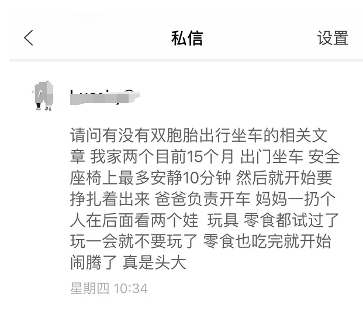
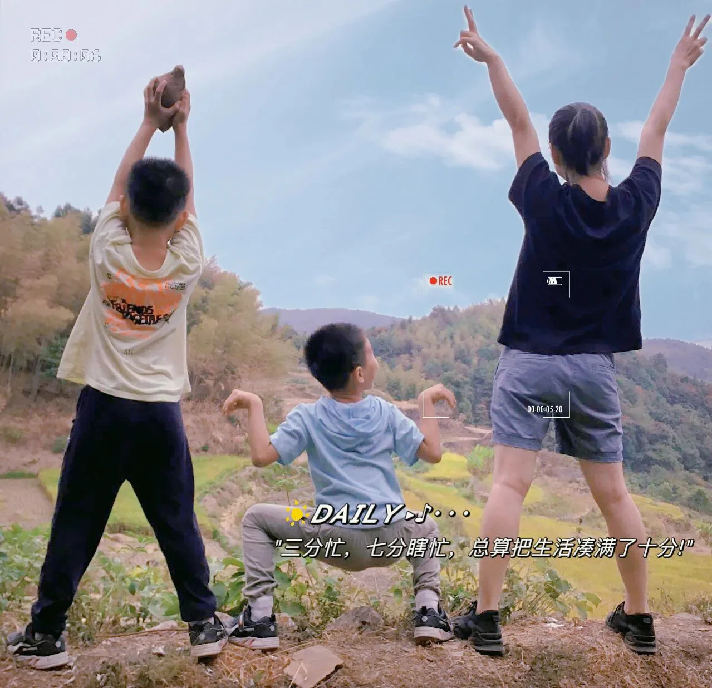

孖仔帮
公众号ID：twinsbang
关注
文|圆圈妈妈
网图|侵删
后台收到一封私信：
今天来回答下，顺便聊聊有了双胞胎之后，我们的诗和远方。
有这么一个公式：
T（时间）=70+0.5E（娱乐）+15F（食物）−10S（兄弟姐妹）
这是英国统计学家根据2000名家长的回馈，计算出的一个精准公式，可以预测小朋友们上车后发脾气的时长。
亲测了下，这个公式在我们双胞胎家庭也同样适用。
圆圈兄弟2岁，我们才有了自己的7座车，每次自驾出游都是默认圆圈爸开车，两兄弟坐后排，而我则挤在两人中间的位置，伺候两位小祖宗在行车过程中的所有需求。
我刚开始的顾虑是：「他们俩坐车能安分多久呢？」好怕车子才开上高速公路，他们就开始哭闹：「我们要到了吗？」、「还有多久到？」、「怎么还没到？」，又或是在狭小的空间大哭大闹又尖叫、踢椅背。
好担心原本的开心出游，会变成一场恶梦。
然而事情并没有想象那么糟糕，这么多年来带双胞胎出行的经历告诉我：带双胞胎自驾游可行可控可甜...还很香。
以下5个小绝招分享给大家，亲测有效哦。
1.小零食很关键
诺丁汉特伦特大学因德（James Hind）教授指出，在长途旅行中，一般孩子在车上待到第32分钟时，会开始询问「我们要到了吗？」，通常70分钟后会发脾气；如果此时有给孩子吃点小零食，那么至少可以延迟15-30分钟发脾气。
所以若是带双胞胎出游、需要长时间坐车，丰富多样的小零食必不可少，不仅可以起到安抚作用、延缓孩子们哭闹的时间，还可以给两头大的家长带来片刻宁静。
私信上的家长说零食不管用，我想，可能是过度依赖零食对小朋友的诱惑力所致。
零食是有用的，但帮助的效果终究有限，而且不能滥用。要记得，一个小时最多给两次小零食，不然会失效得更快，甚至后面完全不起作用。
对于大一点的双胞胎，可以准备一些造型可爱又好吃的新食物，再搭配一些规则，比如约定好坚持不哭闹的时间越长，就可以得到双倍的奖励。双胞胎孩子的竟争意识普遍都强，这一招对他们尤其见效 ，孩子们的配合意愿会更高。
而对于刚长牙齿的双胞胎，则比较难搞，因为正在长牙齿的宝宝通常都是比较浮躁不耐烦的，所以更不愿意被钳制在安全座椅上，此时可以给他们准备一些磨牙小饼干或者牙胶。
我们一家现在出游必备的小零食是口香糖，两大两小一起嚼一嚼，互相给对方吹一个搞笑的泡泡，让旅途更加轻松又惬意。
2.玩具很重要
光有小零食不够，还得搭配一些小玩具。
小孩子在车上闹的原因无非是饿了，渴了，不舒服，如果以上都没有，那就是无聊。
所以带双胞胎出门时一定要带上玩具，在孩子们哭闹时，把玩具亮出来即可转移孩子们的注意力，让烦躁易爆的他们瞬间安静下来。
但是请注意，这些玩具必定是孩子们爱玩的，感兴趣的，最好是限定版的，意思是只有在车上时才可以玩；还要不定期更换这些限定版玩具，不然新鲜感不在，孩子们可能也会厌倦。
圆圈2岁时，我给他们准备的是托马斯玩具小火车，大颗粒积木和积木板，这样够他们玩很久；再大一点就是奥特曼卡片，他们有伴儿一起角色扮演，可以拿着一张卡片叽叽喳喳地说个不停。
还有他们喜欢看书，我会放一些他们爱看的漫画书在车上，让他们一上车就只顾着看书，完全忘记旅途的郁闷，然后每过一段时间就更换下书目，时刻保持新鲜感。
3.多一点互动
若零食和玩具都不管用了，那就硬着头皮上阵吧！
播放孩子们喜欢听的儿歌或故事，给他们读绘本，跟他们一起翻书看，一些色彩鲜艳，图案丰富的纸板书会是不错的选择；还可以组织一场小比赛，指出书中的图案看谁能更快认读出来。
如果没有准备以上道具，也可以引导孩子们看看窗外的风景分散注意力，比如树啊，山啊，房子啊...对于比较大一点的双胞胎孩子，还可以让他们玩找一找的游戏，比如找不同颜色的物体，找一找哪些认识的字并读出来。
我们娘仨在车上的互动还蛮丰富的：3岁前，跟他们玩词语接龙和10以内的加减；上小学后，就比赛背古诗，玩脑筋急转弯，相反词，英语小对话，即兴说词语造句。
4.注意休息
如果所有方式都用遍了，还是不管用，那就找了休息站，停下来休息下吧。
中途休息是最有效缓解小孩子哭闹的方式，可以重置孩子的哭闹计算时间，也可以给照料者得到一个喘气的机会。
双胞胎在行车时若同时哭闹发飙，那此起彼伏的二重奏，很容易让人急得想原地爆炸，但这时如果可以找个休息站停下来休息，孩子和大人的情绪都可以得到释放。
国庆开车回圆圈爸的老家，800多公里，正常8小时到，我们居然走走停停开了15个小时，不是因为塞车，而是长时间闷在狭小的空间里，他们憋不住，我也熬不了，圆圈爸更是累得慌。
当我们在服务区端起热腾腾的泡面一起碰杯时，两大两小看着彼此都笑了，一顿美餐后就屁颠颠地回到车内，继续前进。
5，必杀技，有伴儿不寂寞
我听过很多妈妈都说，如果车上只有一个孩子，就很好哄，只需要跟他互动下，偶尔塞点小零食诱惑下，就可以安静地度过两个小时的车程。
但是如果车上有两个无聊、没有零食的双胞胎，最短在40分钟内，他们就会开始吵闹。
是的，确有此事，双胞胎的相互影响贯穿他们生活中的每一个角落。
但，这是一把双刃剑。
只要把两孩子的行为约束好，发挥他们有伴儿一起玩的优势，即可把他们相互影响的负面效应降到最低点。
小月龄的双胞胎，应尽量避免挨着坐，可以并排间隔一个位置，或者前后座分开；
稍大一点的双胞胎，建议挨着坐，人手一份自己的玩具，涂鸦本等，鼓励他们各玩各的，互不打扰；
再大一点的双胞胎，如上小学了，那就随意了，只需约法三章，遵守规则即可，剩下的让孩子们做主，自由安排。

不得不感慨下，双胞胎长大了，真的在某种程度上松气不少。
现在圆圈兄弟长大了，不管是精神上还是物质上，都没有小时候那么多需求，已经不再需要我时刻在边上伺候着了。
我再也不用挤在中间位置动弹不得，再也不用猫着腰开车门，猥琐地跳下车，再也不用爬天窗，摔个狗吃屎。
现在副驾驶是我的专属位置，视野又开阔，没有圆圈的打搅，我也乐得清净，睡觉，看书，看电影，刷手机....全面实现人身自由。
偶尔回头看看第二排的圆圈，安静地坐在宽敞的位置上看漫画，两人一起瞎聊，打打闹闹，说说笑笑，心里感慨万分。
有时候，我也会很怀念坐在中间的位置，毕竟那是离孩子们最近的地方，给他们讲故事，一起聊天，一起玩小游戏....虽然曾经伺候他们在行车中的一切需求时，凌乱过，憋屈过，崩溃过...
但比起现在被他们哥俩嫌弃，我又觉得被孩子们虐一虐也是一种荣幸。
所以，我特别鼓励你们，趁双胞胎未长大，多带孩子们外出游玩，不管是短途的周边游，还是长途的旅行，都值得尝试和体验。
别光有想法，行动就对了。
带双胞胎自驾出行，耗油耗时还费妈费爸费神，吃力不讨好，花钱买罪受...
但...那又怎样？我觉得值。
一家人齐齐整整去寻找诗和远方，走走停停，兜兜转转，宛如我们在养娃育儿路上的升级打怪，曲曲折折，打打闹闹...开心就好，甭管多累，跟孩子们一起经历过，回头想想就觉得知足，无憾。
✦+
+
诗与远方
MY TWINS
-END-
微信公众号：孖仔帮
ID : twinsbang
专注双胞胎孕育，养育，教育经验分享
扫码关注我们
点一下你会更好看耶

